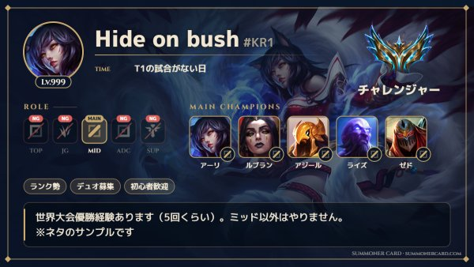
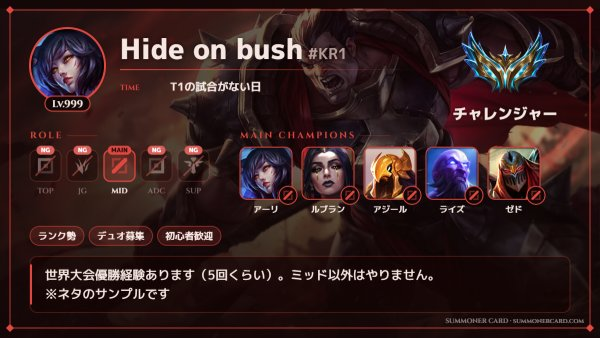
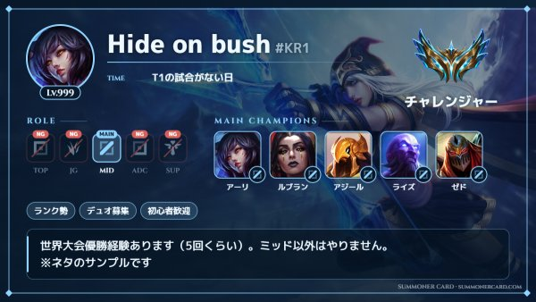
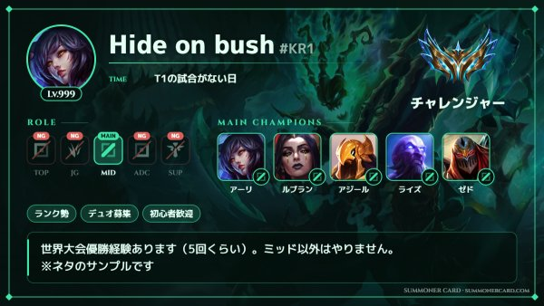
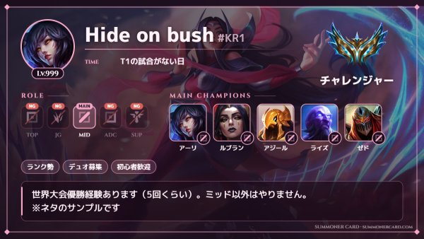
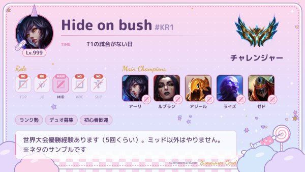
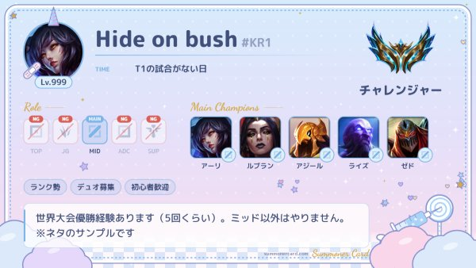
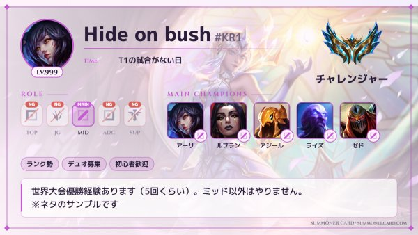

サモナーカードとは？
サモナーカードは、LoL（League of Legends）のプレイヤーがランク・ロール・得意チャンピオン・活動時間などをまとめた自己紹介画像です。Xの「#LoLフレンド募集」や「#サモナーカード」、Discordサーバーの自己紹介チャンネルなどでよく使われています。
これまでは配布されているテンプレ画像をダウンロードして、画像編集アプリで文字を書き込むのが一般的でした。SUMMONER CARD ならテンプレの編集は不要。項目を入力するだけで、チャンピオンやランクのアイコン入りのサモナーカードが自動で完成します。
サモナーカードの作り方（3ステップ）
- 基本情報を入力
サモナーネーム・ランク・ロール（メイン／サブ／ノマなら可／NG）を選びます。名前を出したくない人は「DMで教えます」なども選べます。 - 得意チャンピオンとプレイスタイル
得意チャンプを最大5体、エンジョイ勢・ランク勢・VCありなどのタグ、活動時間やDiscord・Xを入力します。 - テーマを選んで保存
好きなテーマとスキンの背景を選んで「画像を保存」。そのままXやDiscordにシェアできます。
サモナーカードのテンプレ（テーマ）一覧
8種類のテンプレから選べます。どのテーマでも、好きなチャンピオンのスキン画像や自分でアップした画像を背景にできます。








よくある質問
- 無料で使えますか？登録は必要ですか？
- 完全無料で、会員登録やログインも不要です。
- スマホでも作れますか？
- スマホのブラウザでそのまま作れます。完成した画像は共有ボタンからX・LINE・Discordに送れます。
- テンプレ画像を編集しないといけませんか？
- いいえ。画像編集アプリは不要で、項目を入力してテーマを選ぶだけでカードが完成します。
- サモナーネームを出したくない場合は？
- 「非公開」「DMで教えます」などの定型文を選べます。
- 入力した内容はどこかに送信されますか？
- 入力内容や画像はお使いのブラウザ内だけで処理・保存され、サーバーには送信されません。
- 作った画像はどこで使えますか？
- Xのフレンド募集（#LoLフレンド募集 #サモナーカード）、Discordの自己紹介、配信画面などに自由に使えます。